正常状态独立文件稀缺
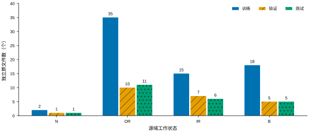
每柱是独立原文件数，核心源域训练/验证/测试为70/23/23；正常类为2/1/1。

每柱是独立原文件数，核心源域训练/验证/测试为70/23/23；正常类为2/1/1。
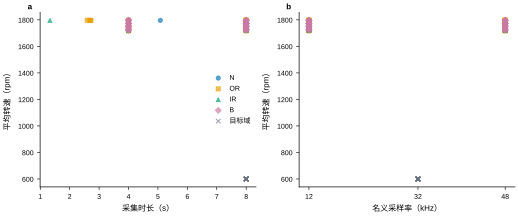
目标转速600 rpm来自题面近似值。点可重叠；右图仅显示主通道名义采样率，不推断其他通道的时钟。
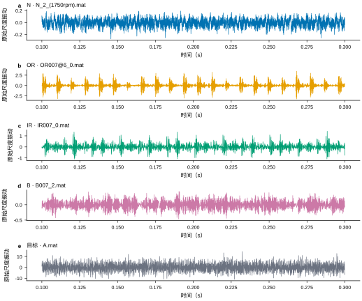
各文件截取0.1—0.3秒；子图纵轴独立，未做幅值归一。单位未知，不标为g。
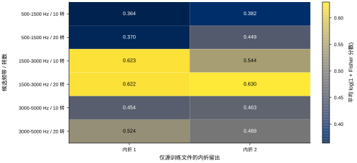
每格为当前留出折上所选特征的平均log(1+Fisher分数)。正常类每折只有1个文件；分数不是准确率。
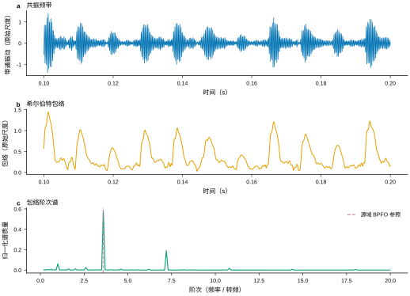
上两图为0.1—0.2秒，同一外圈训练文件；下图为首个完整20转窗。虚线只用于SKF6205源域机理参照。
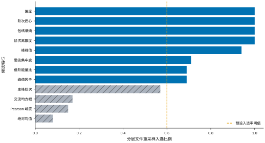
蓝色为最终保留，灰色斜纹为未保留；最终还需满足Spearman绝对相关≤0.9。比例不是置信概率。
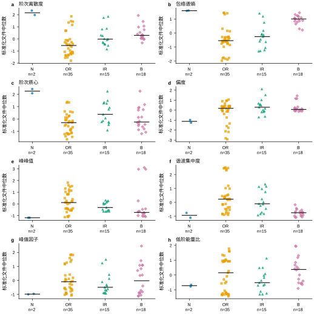
点为文件内窗口的特征中位数，短横线为各类别文件中位数；横向抖动仅帮助阅读。N仅2文件，不估计其总体区间。
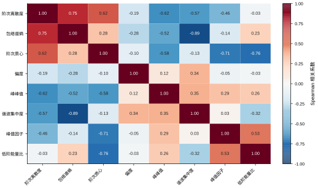
只在源训练文件上计算；对角线为1。相关性小并不自动说明存在分类增益。
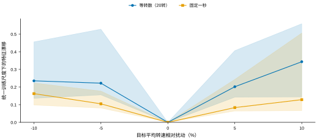
线为16文件中位数，阴影为25%—75%分位区间；两方案用相同主线尺度比较。0扰动为自身基准；漂移不是诊断错误率。
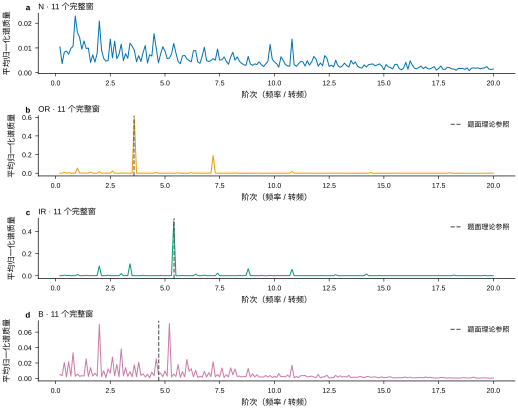
各窗先单位质量归一，再取文件内平均。虚线是题面故障基阶，不要求最大峰必然出现在该位置；正常类不画故障线。
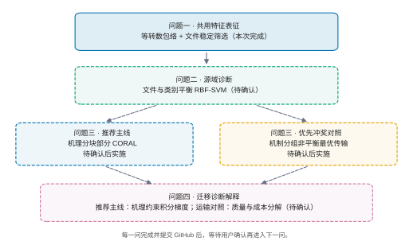
实线框为本次问题一；虚线框为后续计划。两条路线共享问题一输入，本阶段不执行分类或运输。
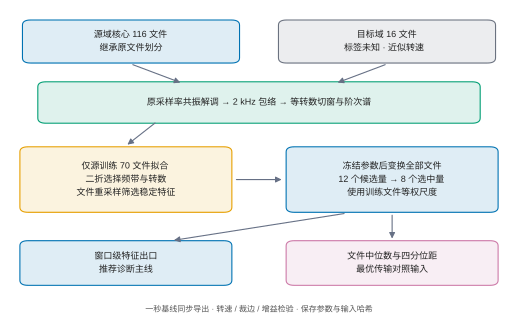
参数拟合与数据变换分开；原文件划分先于切窗。基线与主线冻结同一频带和特征集合。